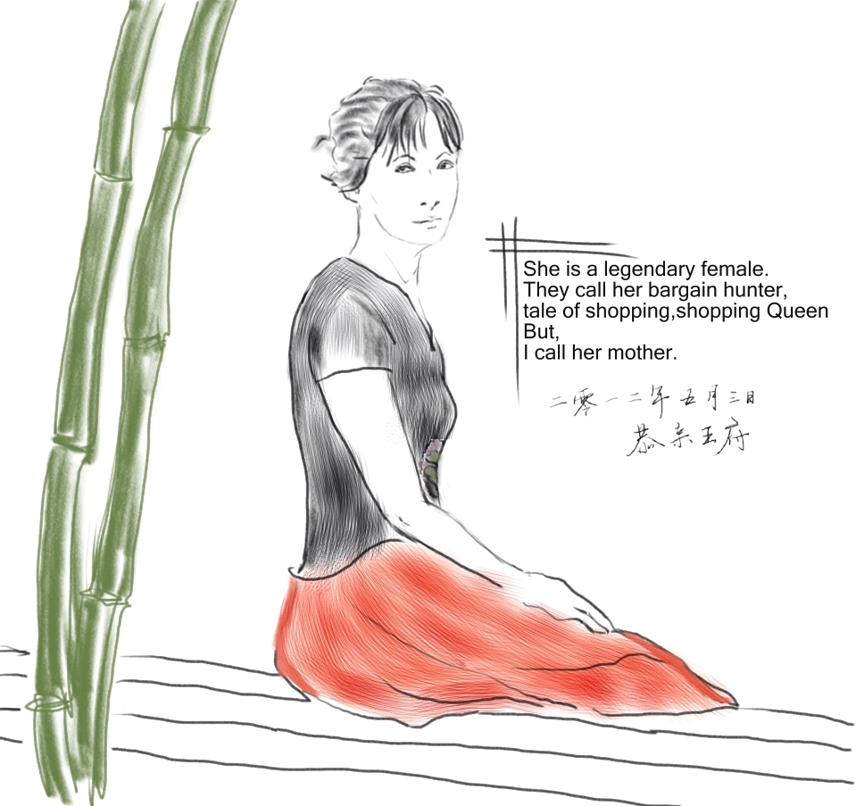

妈妈有一双大手。曾经商场有一种活动，消费达到一定数额后即可参加，把一只手伸到装满硬币和小额纸币的箱子中，能抓到多少就奖励多少。听说一般人大概能抓到10块钱左右，妈妈抓了32。
妈妈有一双大脚。我从小就跟在妈妈后面逛街，经常看她试鞋也就记住了妈妈的鞋号。对于只有几岁的小孩子，自然觉得成年女性的脚应该都是那个号码。后来过了很多年我才发现，39号对于女人来说着实不小。偶尔在我懒床的早晨，我也用脸体会到了这脚究竟有多大。
妈妈有个大嗓门。如果妈妈在电梯里笑了，我们出了电梯，拐了个十几米的弯，还能发现从楼上到楼下，至少三层的声控灯被震亮了。有段时间我们家门廊的声控灯不太灵，除了妈妈说话能让它亮以外，跺脚，拍巴掌都不亮。后来发现，对着它说“妈”，它马上就亮。有一次出门，公交站有个重复自言自语又痴笑的“傻子”。妈妈去看站牌，看完之后大喊一句“诶呀，反了！”傻子当场就被吓傻了，半天没敢再说话。
妈妈热衷购物。当初帮她申请QQ号时给她取了个“购物达人”的昵称，因为实在是有太多匪夷所思的辉煌战绩。陪我买西装，原价两千多的知名品牌，折扣之后只要两百多。去交钱时发现跟说好的价格不一样，因为有其他活动又减了几十块，这不是骗人吗！最后只花了一百多，连原来的零头都不到。上大学后，回家过年跟妈妈上街，发现每个商场哪里特卖，哪里是直升梯，哪个门能最快通往另一个商场，建筑立体构造，妈妈完全了如指掌，穿梭自如，已臻化境。不过，真正让她成为传说的，是后来在北京动物园批发市场一百块买了一百五十七条裙子的故事……
妈妈是英语老师。每个假期大部分时间我都会被妈妈看着学习。同学打电话找我出去玩，我很好奇为什么他们都能在外面疯玩，爸妈不管吗？“他们上班去了啊。”原来是这样！只有老师才会放寒暑假，所以我才每天被盯着学习。我是到了高中才发现这个问题的。
……
《我的妈妈》，是小学的第一篇命题作文。迎合那时的标准，作文内容和情绪多是不真实的。我当时写的是受伤后，妈妈帮我包扎伤口的故事，记得还有“晶莹的汗珠”这样荒唐的用词搭配。初中时，有篇半命题作文《__我的母亲》，前几次苦思冥想挤出来的作文都被老师打回来了。后来写下最想说的话，交了篇《教育我的母亲》，大意是希望妈妈不要为了我而活，不要牺牲自己的人生。老师没说什么，却帮我投了稿。文章被妈妈从杂志上剪下来，现在还收藏着。高中时期伪文艺之风盛行，我也曾为赋新词强说愁，添油加醋地剖析过自己的童年和家庭。那时开始住校，现在想来也许是个很好的过渡，尤其是对妈妈。因为我与她在一起的时间将会越来越少，离她越来越远，从西安广场到附中，从长春到北京，到上海，一直到地球的另一边。上了大学后，有幸参加了妈妈的婚礼，那之后的冬天家里暖烘烘的，一定不只是暖气的作用。我自己装订了小册子文集，封面画着火车，驶过的铁轨有两次变道，分别标注了年份。妈妈一看就懂了，那是改变我人生轨迹的两个时间点，98年到05年，妈妈独自抚养我长大，那是我们母子最重要的一段时光。之后的时间过得越来越快，每年春节短暂的团聚，电视节目里主持人串场，歌曲，甚至小品，总有亲情的主题，饱满到溢出地企图撩拨你的心绪。电视机前努力回避的你我，诠释了家庭中的克制与内敛。所以我想过，这个阶段再写一篇命题作文，多半会是什么样。即便是用文字表达，也是克制的，因为即使是最平淡的屋檐下的点滴时光也足够浓烈了。所以，有了上面那段尝试，然而并没有完成，那瓶时光才仅仅掀开一点，我就已经涕泪纵横。

2020.01.21
Richardson